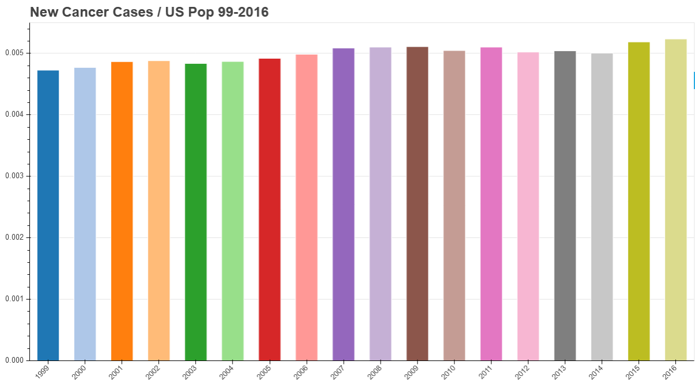

Data Visualization Projects
How Fast is Automation Reducing Job Availability? I wanted to know the answer to this question for my Code Louisville Python Project. To accomplish this goal, I gathered datasets from the U.S. Census, Bureau of Labor Statistics, and JOLTS. End results show an estimated 27 million people without a job available to them in 2016.
 See the Stats »
See the Stats »
New Cancer Instances - Data Visualization
To identify whether or not cancer prevention is working, I collected datasets from Center for Disease Control and Cancer.org. From there, I compared these sets of data to the average population rate for the United States. The information, spanning from 1999 to 2016, reveals a growing percentage of new cancer patients over the last two decades.
 Check Your State »10,000 Dice Game
Roll 6 dice. Akin to Yahtzee. Scoring goes by straights and pairs. Ones are worth 100, unless you get three. Get a run, small or large, and get bonus points. Noticed during play all 6 dice never landed on the same number. Wanted to see how often this anomaly occured. Charted the results.
 Dice Game Stats »
Dice Game Stats »
Twitch Data
Monitored 7 fighting games on Twitch. Recorded then compared follower and viewer count from 1/2-1/7/2019.
FG Info »MTG Basic Simulation - Data Visualization Stats
After completing the initial project, I wanted to identify how often one deck wins over another with Evolving Wilds in MTG. Stats reflect a customized deck copied. Copy has mana substituted with Evolving Wilds. Decks go against each other 100,000 times.
 View Results »
View Results »